1
Project Origins
My first exploration of sound mapping was back in 2012, as part of a research project. I was interested in how much noise pollution I experienced in my day to day life, and developed an Android app to continuously take one second recordings every minute for several weeks. My data visualizations were simple summaries of my research results. This heat map shows the noisiest times in my days, with darker squares showing the noisier hours.
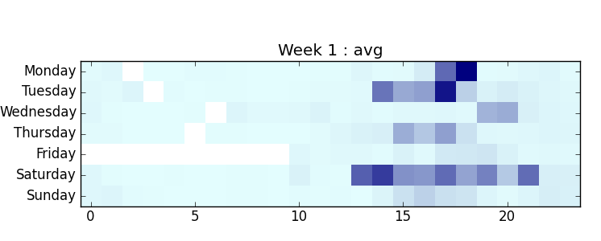While searching for similar projects, I discovered Stamen Design and their TenderNoise project. I’ve been a fan of their work ever since.
When I found out about the Gray Area Creative Code Fellowship, and that Stamen was on the list of mentoring organizations, I had to apply. It was a long shot, since a lot of people would be applying. I proposed an ambitious project: expanding on my earlier research, adding geolocation, and developing new visualizations. To my surprise and delight, Stamen selected my proposal.
2
Finding Story & Defining Scope
From the beginning, this project was about collecting new data and finding the story. Going out and observing an urban environment in a new way, and visually expressing these observations.
The scope of my proposed project was way too big to accomplish in ten short weeks. How much data could I actually collect? Trying to get recordings from all over SF would lead to sparse data problems. Gaps in a map would stand out.
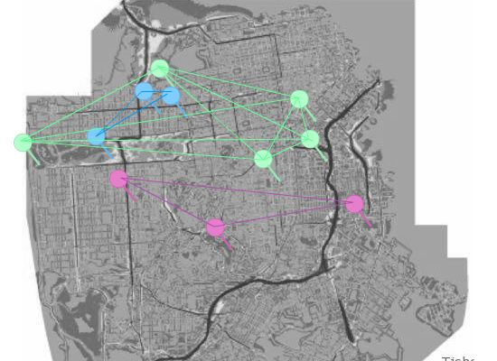 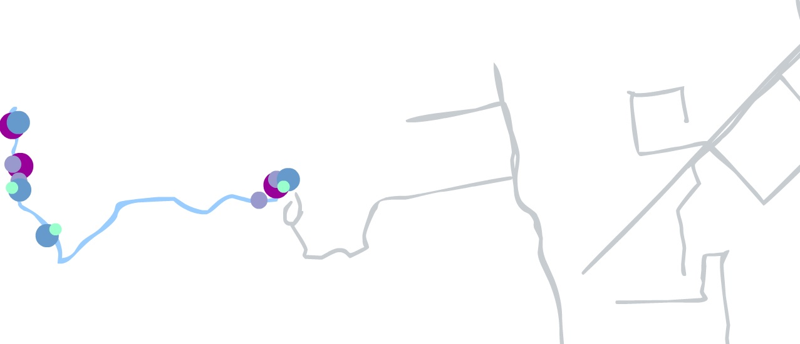
Some early sketches made this obvious. I started playing with the idea of visualizing sound as I went on walks around the city, which had some promise. But a narrower focus was needed. Instead of trying to tell a story about the whole city, this would be a smaller story.
It seemed natural to focus on the area between Stamen and Gray Area. I would be walking back and forth between the two locations throughout the fellowship. This constrained the sampling area to Mission and Valencia streets, between 16th and 22nd streets. It also focussed the project on the Mission district, a neighborhood in San Francisco currently going through a great deal of change. My walking recording sessions would capture an audio ‘snapshot’ of the neighborhood as it is today.
3
Data Collection & Analysis
Since there wasn’t enough time to add geolocation features to the app I’d developed for my previous research, I looked for an app that came closest to what I needed. The OSM tracker had the essential features: audio recording with timestamp and geolocation.
It also displayed estimated gps accuracy. This came in handy, as I learned about gps and how signals bounce against buildings making positioning less accurate. In my walks, I tried to stay as far from buildings as I could. This helped with better accuracy, which ranged from 3-10 meters, but usually around 4 meters.
In my previous research, audio was sampled once per minute. As I started collecting data while walking, it became clear that this wasn’t nearly frequent enough. After trying several intervals, five seconds worked out best. Sampling, instead of continual recordings, was done for a statistical approach and also to avoid recording entire conversations.
Between the Stamen studio and the Gray Area theater, I’d walk on either Mission street or Valencia street. As I walked, I would count seconds, and press the record button when about five seconds had passed. It became somewhat meditative for me. Over the days, I became more aware of the specific sounds around me.
Once I had audio samples, I could start working on the code for analyzing them. Data for each walk was transferred from the phone to laptop via usb cable. Android stores audio files in a format that has to be converted to another format before it can be played back. I used ffmpeg with a shell script to convert the files. Most of the code for analysis and some visualizations of the audio files was written with Python, using various scientific and FFT code libraries.
Technical description and source code, mostly written in python, is online in the myCitySoundsViz repo.
4
Visualizing Audio
My first visualizations were of individual audio files. I’m fascinated with the audio waveforms, and how different types of sounds have different shapes. Incorporating these in the final project was on my mind from the beginning.
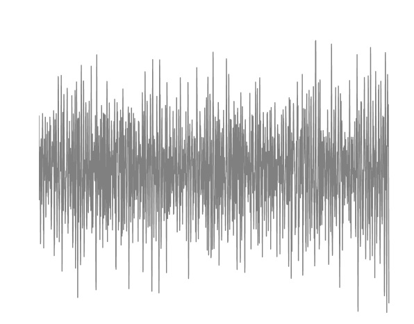 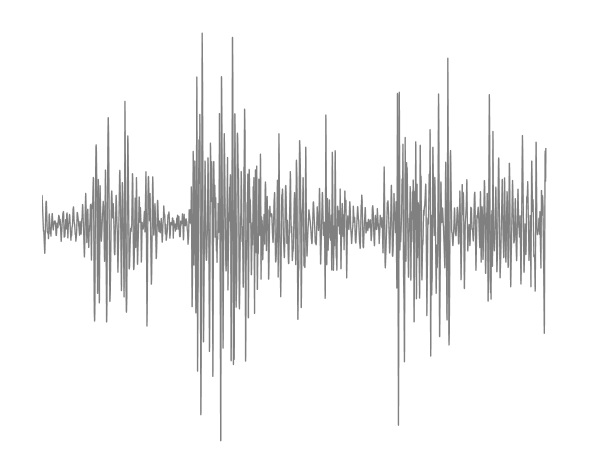The early days of the fellowship were filled with brainstorming and sketching. Thinking of ways to incorporate the waveforms, one of my early sketches reminds me of an electrical circuit.
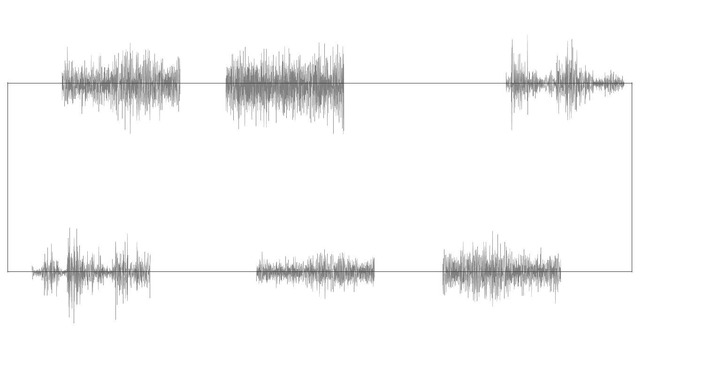I also experimented a bit with processing.js and played with the idea of audio bubbles bouncing around. This was a lot of fun, and reminded of my days coding particle systems in AS3.
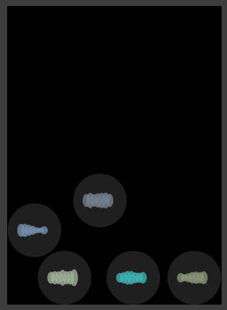

Identifying different types of sounds could have led to another level of detail in the visualization. Listening and classifying each recording took a long time, and only a couple walks were analyzed this way. Doing the classification automatically would make this much faster, but there wasn’t enough time to develop the code for it.
I did get a good start though, and while learning about audio fingerprinting I learned bit about signal processing and generating spectrographs. These show much more detail than waveforms, and can be used to classify audio recordings. They can also be very beautiful.
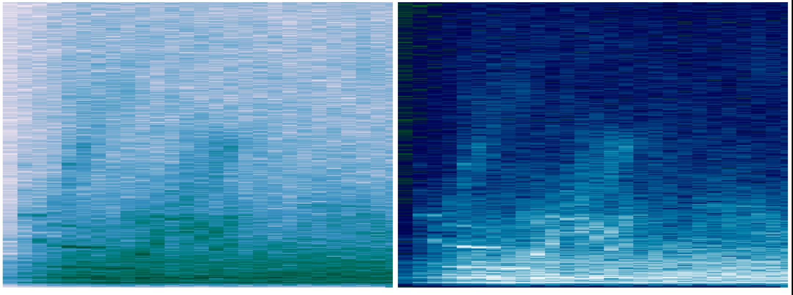Once I had some recorded walks to work with, I started experimenting with mapping them. At first, it was just placing markers for samples in relative positions. The visualization took shape slowly, first for one walk, and then for several.
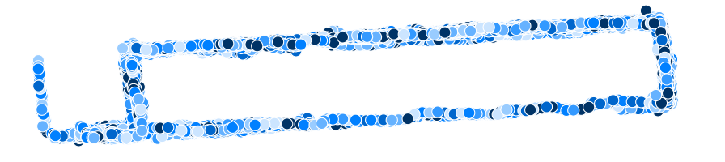At first, I was thinking that each recording would be classified, and the dots could be colored according to what type of sound it was. But after experimenting with emphasizing individual walks, rather than aggregating the samples, I decided to go with using color to signify which samples were from the same walk.
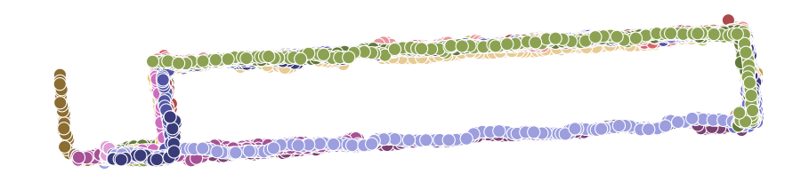This led to experimenting with showing “menu” of walks, instead of showing all the data at once. Offsetting the position of each walk looked interesting, but wasn’t very useful for looking at one walk at a time. Adding relative noise levels for each sample, created some interesting patterns.
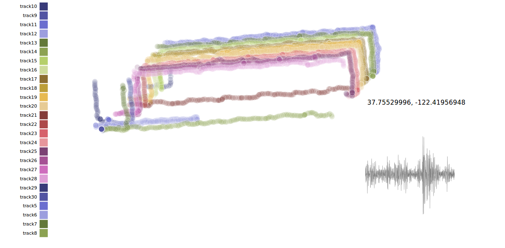 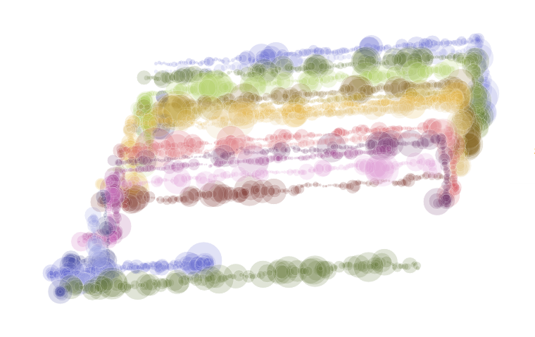Decided to make a “menu” of walks, that could be examined in detail. Make them playable...like a song. Drawing a few streets and label them, to provide context.
Still wanted to show the waveforms of each audio sample, so included these in the details view for each sample. Details are visible when mousing over a mapped do, and when the walk’s recordings are played back.
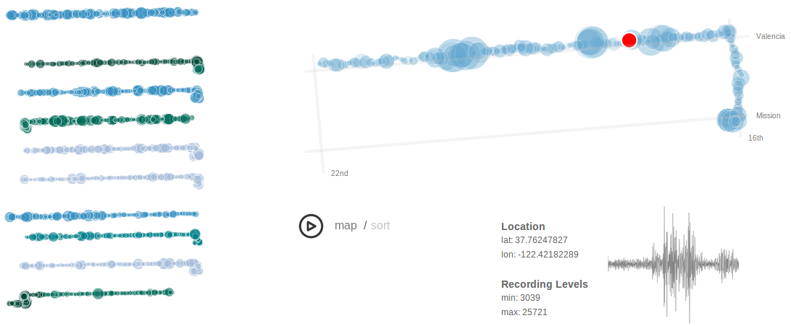One unexpected observation, when I started visualizing recordings on the map: I realized I was walking on Valencia street much more than Mission. Why? Well, the block of Mission between 16th and 17th streets is ...well, there’s a lot of crime on that block.
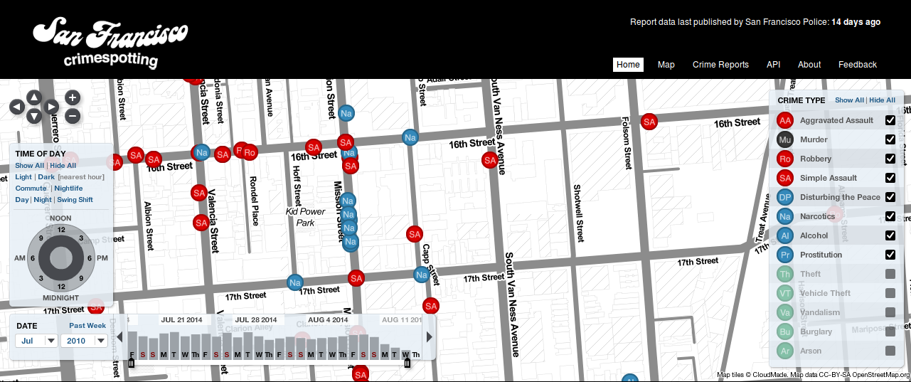Once I noticed I’d been leaving out a big area in my project, I changed my pattern and walked to Gray Area along Mission street. If I stayed on the Eastern side of the street, especially between 16th and 17th streets, it seemed safer.
Working with the team at Stamen was fantastic. Coming from a science and engineering background, I’d never had access to so much design talent before. The feedback I received helped shape the visualizations. It helped me step away from the details of the data and see the big picture, to get from “engineer art” to a much better design.
5
Challenges
For me, the greatest challenge was creative...about finding the story. I’m happy rooting around in a dataset and finding new ways of exploring that data. But finding a way to share those discoveries with others, in a way that makes sense outside of my own brain? That’s a major challenge. It’s the age old challenge of good storytelling.
The time constraints were something I kept facing. Many ideas couldn’t be followed through on, because there wasn’t enough time. Sound classification being the one I most wish I’d had more time for.
6
Installation at Gray Area Theater
For the installation at the Gray Area theater, there will be a modified projected version of the visualization that’s now online.
The spectrographs were just too beautiful to mothball. So, I listened to each of the 8,000+ recordings, most of which were of background and traffic noise. But some were interesting sounds, like sirens, voices, or music. The installation will include printed spectrographs of a sampling of these sounds.
7
What's Next?
First, develop a sound classification system, update my research app, and continue collecting data around San Francisco.
In time, the plan is to open the project for community participation and to support an open data set.
About
Kristin Henry is a Computer Scientist specializing in data visualization and data science, generative artist, and full stack engineer.
This work was made possible through the Gray Area Creative Code Fellowship program.